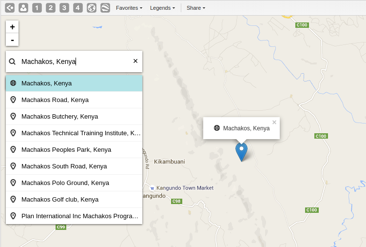

The place search function allows you to search for almost any location or address. The place search is powered by the Mapzen mapping platform. This function is useful in order to locate for example sites, facilities, villages or towns on the map.
|  |
On the left side of the GIS window, click the magnifier icon.
Type the location you're looking.
A list of matching locations appear as you type.
From the list, select a location. A pin indicates the location on the map.